Table Finder
an app for Tabletop Roleplaying gamers
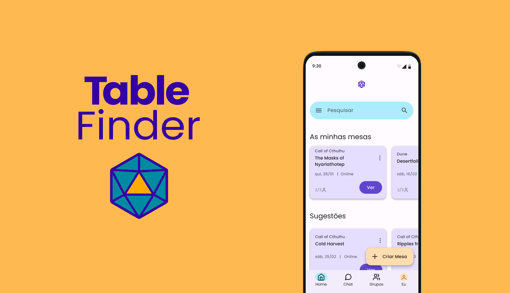
Role
Product Design
UX Research
Wireframing
Prototyping
UI Design
User Testing
Tools
Figma
Figjam
Google Forms
Team
Self
Duration
november 2022 - january 2023
Overview
In the FLAGProfessional UX/UI Designer course it was proposed that the students solve a problem using the UX/UI methods learned to date. I decided to focus on a problem that my friends and I had already gone through: coordinating TTRPG (Narrative Board Games) games.
Research and Strategy
Questionnaire
To better define the problem, I needed to know how users organized and coordinated games, and what problems they were experiencing. A questionnaire was created, directed at several communities of TTRPG players through social media, which obtained 40 responses, of which several key findings were taken:
- 💡 70% of users indicate scheduling coordination as the main problem in scheduling games
- 💡 65% consider the process of participants getting together to play difficult or very difficult
- 💡 82.5% find available players/GMs/groups through online servers/social media groups
- 💡 80% of users use Discord to organize games
Below are some citations collected by the questionnaire, in relation to the difficulties encountered when organizing TTRPG games:
“Being able to have a schedule of sessions that can please everyone.”
“Lack of player availability and cancellations (often at the last minute).”
“Scheduling between multiple people, out-of-session player dedication”
"Getting players for something non-D&D."
"Waiting for answers, which often take time and complicate the process"
”Finding people to play with is sometimes difficult. As there is no very centralized and popular place where you communicate and find players, I have to post […] in various Facebook groups, Discord and other places to find players for the tables I organize."
”Scheduling conflicts, it's hard to arrange a day where everyone can [play] (whether online or face-to-face - although online is a little easier)”
”Availability of everyone involved, the need to always have sessions of a few hours and how difficult this is to reconcile with everyday life.”
”To agree on a session day, in which everyone (players and GM) is available to play.”
Problem definition
By analyzing this data, it was possible to understand that the two main problems for users are:
- To find games/players
- Coordination of schedules
Before starting to think about solutions, I needed to better understand the process that leads to this frustration.
Persona
Based on demographic characteristics and the information collected in the questionnaire, I created a persona: Luís.
- Luís
- 27 years old
- Works full time as a Software Developer
- Lives in Lisbon
- Novice TTRPG player
“It's hard to find people to play with and coordinate schedules”
Objectives
- Play with new people
- Find an available game quickly
- Play something other than Dungeons and Dragons
Frustrations
- Lack of a centralized place to find games
- Not knowing who to contact
- Coordinating schedules with other players
Journey Map
A journey map was created for Luís, with a premise based on previous user research, where Pain Points and Opportunities were identified. At this stage, it was possible to identify that a possible solution would involve some type of app or web service.
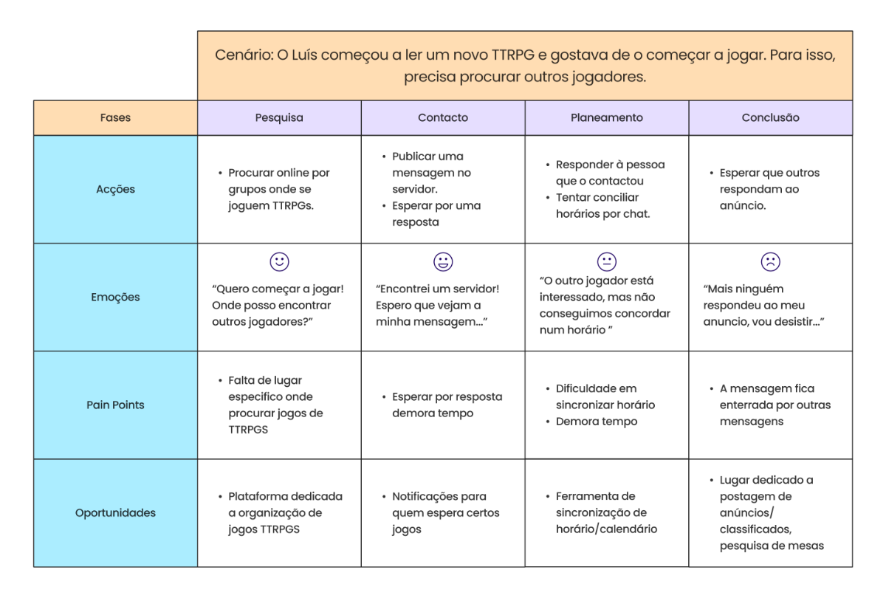
Competitive and comparative analysis
Through User Research, it was revealed that Discord is the service that most users use to synchronize schedules and find players. However, this is ineffective, especially when it comes to coordinating schedules.
In my competition research, I did not find any service/app dedicated to the specific scheduling/organization of TTRPG games both online and face-to-face. So I looked for calendaring and scheduling applications whose characteristics could be useful for a solution to the identified problem.
Services identified as indirect competition were Discord, Howbout, Doodle and Calendly. The following table evaluates the features and usability of the mobile apps.
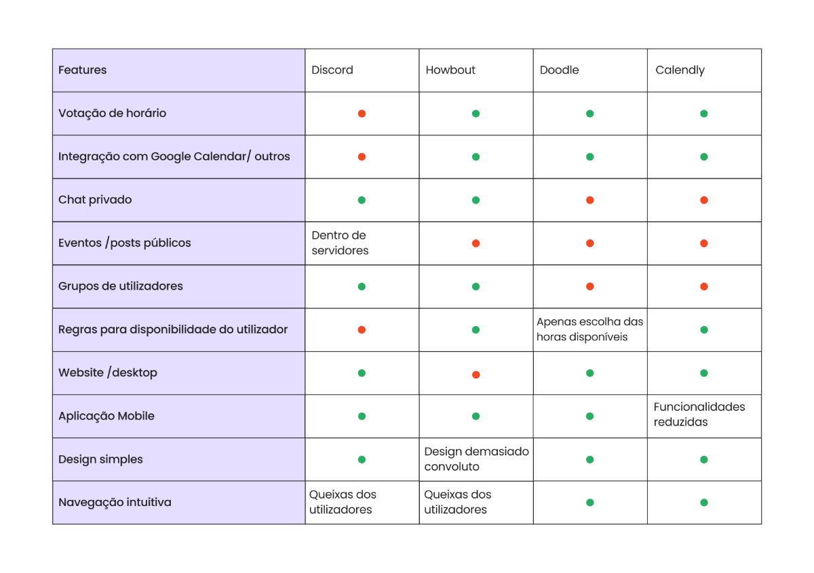
- 🔎 Discord: Presents the characteristics of a voice over IP and messaging application. It has the possibility to create servers and groups, but it is more optimized for PC than for mobile,in which the interface is quite confusing.
- 🔎 Doodle: Scheduling service, works mainly by invitations. Group questionnaires are created to propose time options for a group, one on one - propose specific hours for a single guest.
- 🔎 Howbout: App that focuses on organizing events between friends. It has an interesting premise, but turns out to be too confusing, it lets the user choose when he is working/not available, and from there it suggests times for events that all participants are available.
- 🔎 Calendly: Scheduling service. The application includes rules for when the person is available, within each type of event, it also contains a voting system for guests. The mobile app lacks many of the features, most useful for notifications.
Low fidelity and Information Architecture
Feature Prioritization
After benchmarking, I began sketching elements and features for this service. Three main elements were identified: player, groups and table. Looking for the way they relate, the necessary features were identified.
The two main objectives identified in the previous phase were:
- Find games/players
- Coordination of schedules
Thus, the features identified for each objective were:
- Find games/players
- Search with filters
- Creation of
- User groups
- Coordination of schedules
- Creation of availability rules
- Synchronization with calendars
- Chat - groups and people
- Friends
Information Architecture
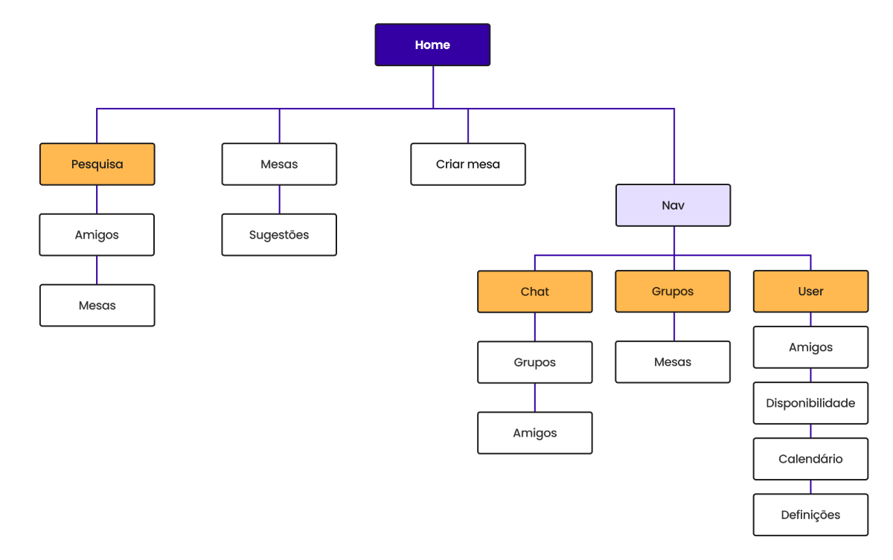
For a clearer view of how the app would be organized, an initial site map of the most essential features for its operation was created.
User Testing - Low Fi
Having identified the main features and their organization, I drew several paper wireframes, that became low-fi prototypes for a mobile app that integrated the main features. The prototype was used in User Testing, with three different users.
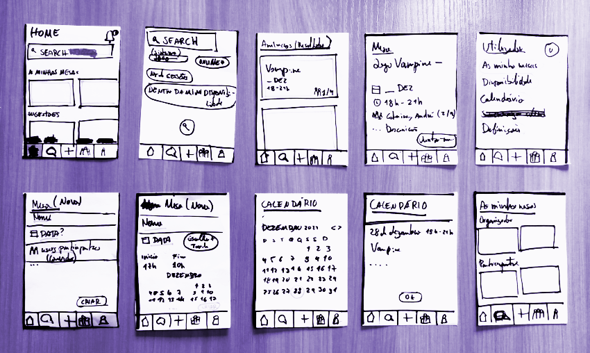
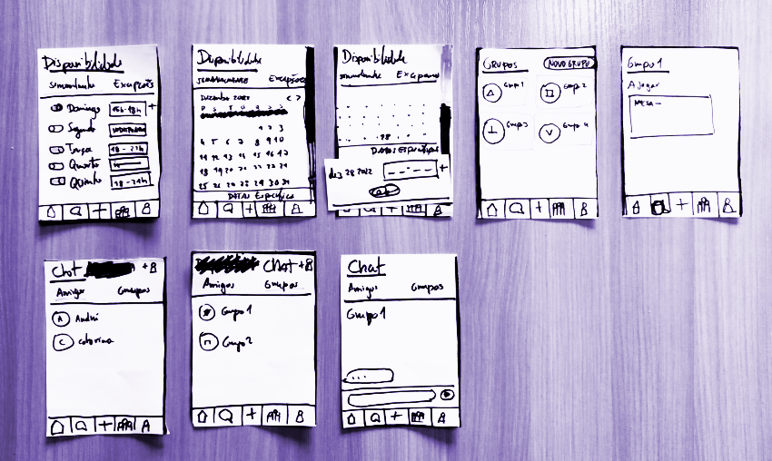
While running the tests, several weaknesses of the projected application were identified and what should be changed.
High Fidelity e Visual Design
Moodboard
The universe of TTRPGs is extremely evocative with several visually interesting elements, from medieval fantasy to urban futurism. The dice used in these games are varied and also visually interesting. Colors were chosen evoking themes of magic, fantasy and the ethereal, with a focus on complementary colors (purple and yellow) and analogues (purple and blue).
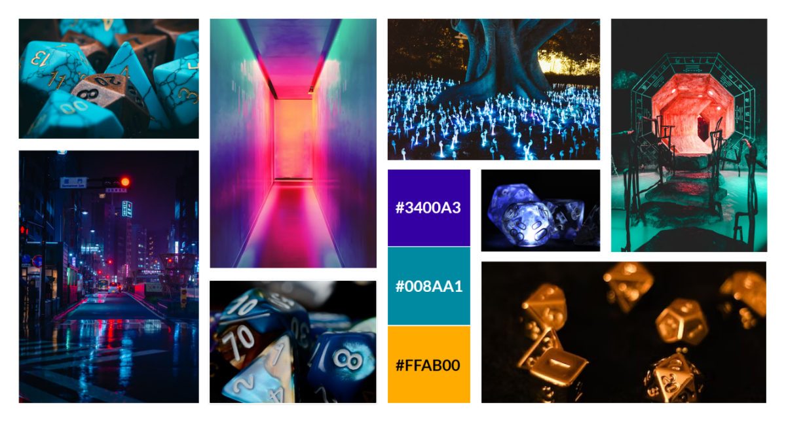
Logo Design
For the design of the logo, I chose an icosahedron, the solid of a 20-sided die. The 20-sided dice (most commonly known as d20) are the most popular in TTRPGs, and instantly recognizable to players. For the name of the app, Table Finder was chosen, because it objectively shows its purpose.
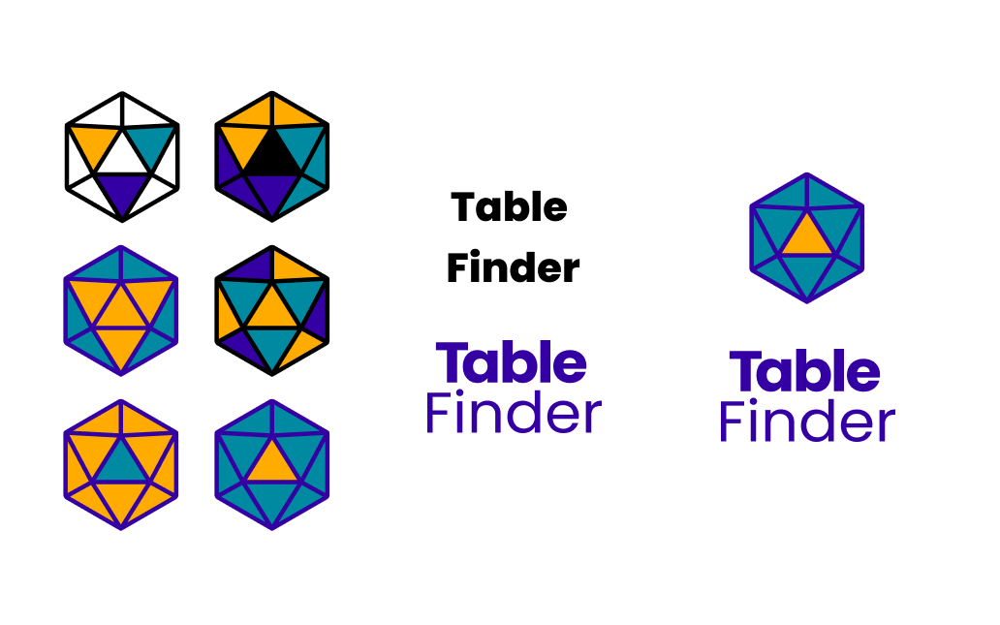
Typography
The Poppins font was chosen for the whole app typography, a geometric sans serif typeface.The geometric properties of the font are a reference to the geometry of the several dice used in the TTRPGs.
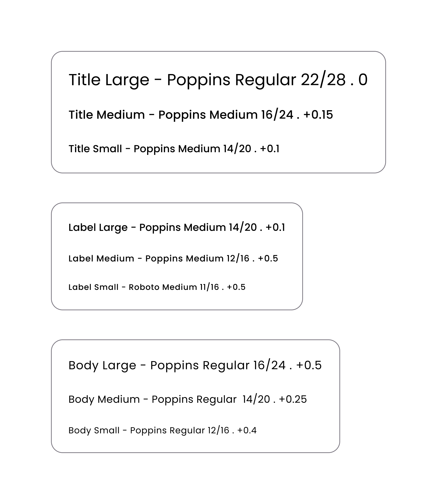
Color guide
Using the “Material Theme Builder” Figma plugin in the predefined color system of the Material Design 3, the Primary, Secondary and Tertiary colors were inserted, in order to create a Light Theme that made the colors to be used more subtle.
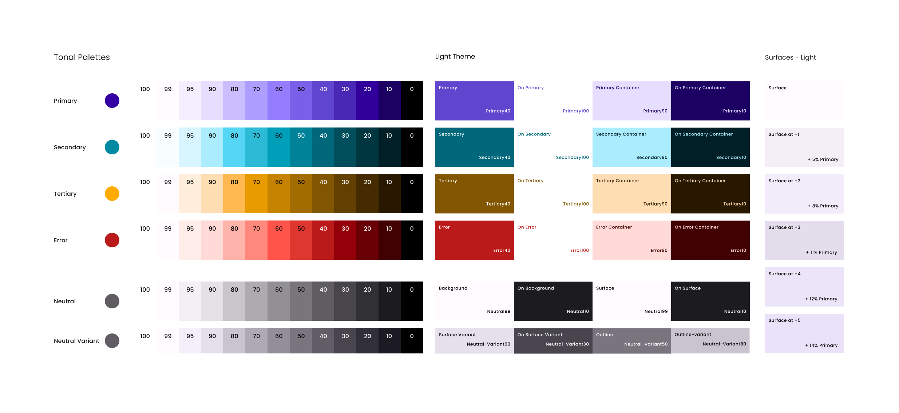
Hi-fi screens
Combining the lo-fi prototypes with the knowledge acquired in low-fi user testing, the hi-fi screens were created in Figma. The initial prototype was created with components from Material Design System Kit 3, in order to speed up the prototype creation process. The various screens and elements were then manipulated to create a more diverse palette, as well as the creation of custom elements for a better user experience.
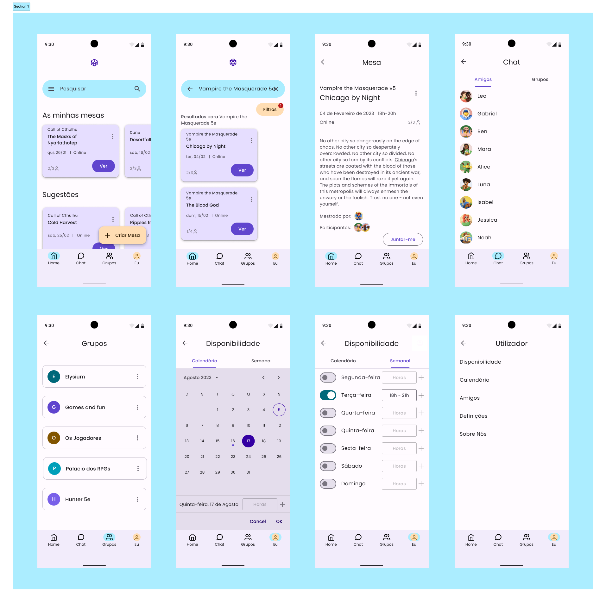
Prototyping e User Testing
Prototyping - Interaction Design
Once the screens were designed, several user flows were created, the main ones being the table search process, and defining the user's availability. These were chosen because they are the most complex, and the ones that most differentiate the app. The created interactions followed simple and objective animations, which fulfill the proposed objectives.
User Testing
The final prototype was tested by two users who fit the app's target audience (TTRPGs players). The Search by table process and User Availability Definition were tested.
The process of Defining User Availability required no changes.
The table search process turned out to be quite simple, with only the issue of the availability filter having been identified as a weak point.
Final Prototype
Final considerations
The prototype and the flows created solve part of the problems proposed at the beginning of this project, however, in the future I would complement the prototype with other functionalities that were not developed, such as the creation of tables.
Regarding the design process, there was some difficulty in creating the hi-fi prototype using the Material design Kit, due to the lack of familiarity with it, leaving room for more learning.
This project was a good opportunity to apply the knowledge gained in the course, as well as to develop the ability to manage and execute a project from start to finish.